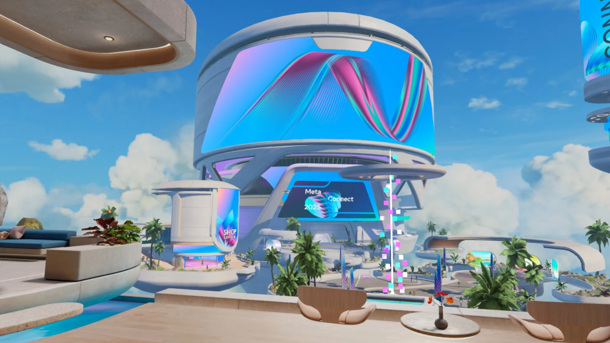
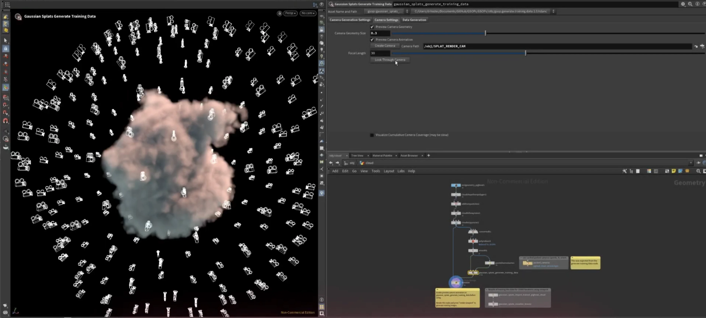

Since March 2023, I've been working at Meta Reality Labs on 3D graphics, gameplay, characters, and AI. The image above shows Horizon Central V2, a hub world that was released in 2025 - I worked with a large team of artists and engineers to bring graphics and gameplay elements to life.
Distance Crowds & Portals
Central V2 hosted larger groups of people on one server than previously possible - one feature I worked on were distance crowds, using particle systems to stand in for the usual complex avatars. I helped create the render pipeline, shader, and behavior code for these distant avatar systems.
In the left of the above image, you can also see portals that I worked on; writing and optimizing the parallax / skybox shaders that created the depth illusion, and writing the Typescript that drove a networked countdown, transition animation, and content refresh sequence.
Sampling Optimization & Shader Systems
I also built a wide variety of shader and rendering systems for Central V2, including this scrolling arrow effect, which only uses a single texture sample - you can see a shader that uses similar sampling to create a repeated effect on my shadertoy profile here.
Avatar Pipeline & Customization
Meta went through a somewhat infamous transition to avatars with legs in 2023 (see above), during which I worked on the asset pipeline for avatars, used to process all the variations of hair, clothes, and more to ensure they worked for all shapes and sizes. Specifically, I built out parts of the pipeline used for testing to ensure that all LODs looked accurate, and that none of the assets were unexpectedly clipping through parts of the avatar that should be covered.
During this time, I also worked on the first prototype of a version of Horizon in which players could create avatars with much heavier customization, similar to VRChat. Eventually, some avatars in this style made it into the game, such as the two on the far ends of the above image.
Gaussian Splatting Research
I also worked on several experimental projects involving AI and cutting edge graphics techniques. One specific area I worked in was GSplats, or Gaussian Splats, a novel method for rendering 3D geometry in real time. This technique is often used to represent geomtry captured with physical cameras in real life, but in our case, we were using it to capture high quality renders of digital 3D assets that are difficult to render in real time, such as clouds, and create beautiful and optimized versions with splats.

GSOPS, CGNomads GSplat toolkit for Houdini, was primarily where I worked to render hundreds of images of an asset (in a setup similar to the above image), which I would then use a COLMAP fitting system to render out into a relatively low density splat asset.
AI Gameplay & Creation Tools
Other experimental projects I worked on included many AI powered gameplay or game creation tools, such as a game where players generate AI entities that they then battle like Pokemon, script generation tools that create functional game code from text input, and systems that generate full gameplay loops with assets based on text input, similar to Claude + Threejs workflows.
Before joining Reality Labs, I worked at Meta on AR experiences for Instagram and Messenger.